Kusatsu, Shiga: things to do, food and stays
Kusatsu · Shiga
Kusatsu
Highlighted on the Shiga map.

Stay
ホテルボストンプラザ草津びわ湖
Hotel Bosuton Plaza Kusatsu Biwa Mizumi
Hotel in Nishioji, Kusatsu with business travelers and lakeside location.
クサツエストピアホテル
Kusatsuesutopia Hotel
Hotel in Nishioji, Kusatsu with breakfast available; 3-minute walk from Jrkusatsu Station.
アーバンホテル南草津
Aban Hotel Minamiso Tsu
Hotel in Minamisotsu, Kusatsu with breakfast available; 0-minute walk from Minamisotsu Station.
アーバンホテル草津
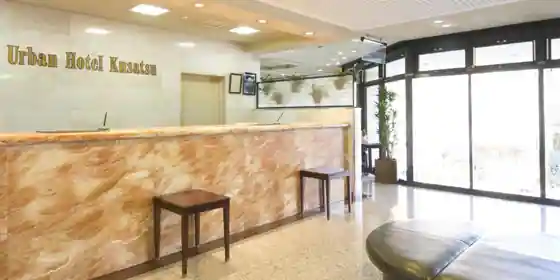
Aban Hotel Kusatsu
Hotel in Oji, Kusatsu with breakfast available.
水の環ホテル 湖音
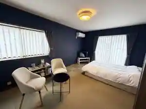
Mizu No Kan Hotel Mizumi Oto
Hotel in Kusatsu with lakeside location.
ラックホテル草津
Rakku Hotel Kusatsu
Hotel in Higashikusatsu, Kusatsu with parking.
スーパーホテル滋賀・草津国道1号沿 天然温泉 あおばなの湯
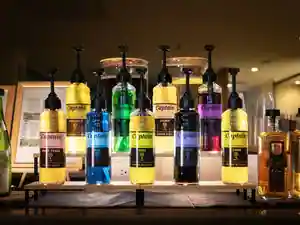
Super Hotel Shiga Kusatsu Kokudo 1 Go En Tennen Onsen Aobanano Yu
Hotel in Kusatsu with breakfast available and parking.
ビジネスホテルＨＩＢＡＲＩ（ビジネスホテルひばり）
Business Hotel HIBARI(Business Hotel Hibari)
Hotel in Wakatake, Kusatsu with Wi-Fi and business travelers; 7-minute walk from Kusatsu Station.
ホテル21 cozy little hotel
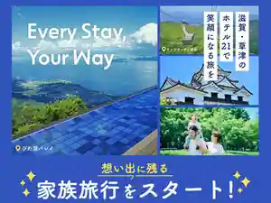
Hotel 21 cozy little hotel
草津第一ホテル
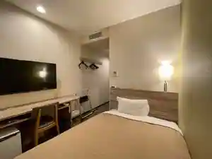
Kusatsu Daichi Hotel
Hotel in Wakatake, Kusatsu; 5-minute drive from Ritto IC.
東横ＩＮＮ琵琶湖線南草津駅西口
Toyoko INN Biwakosen Minamiso Tsu Eki Nishiguchi
Inn in Minamisotsu, Kusatsu with breakfast available and lakeside location.
びわこの千松
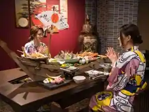
Biwakono Sen Matsu
Inn in Nihama, Kusatsu with kaiseki dinners and lakeside location.
Dining
滋味 康月
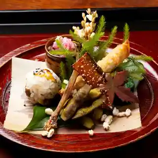
Jimi Yasushi Gatsu
パン・ドゥ・マルシェ
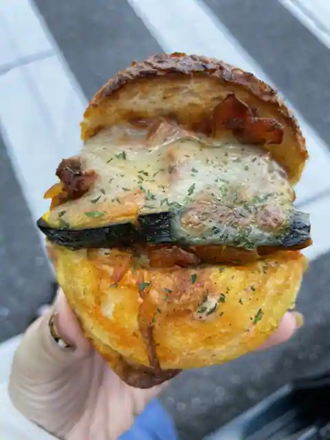
Bakery Dou Marushie
博多とんこつ 真咲雄
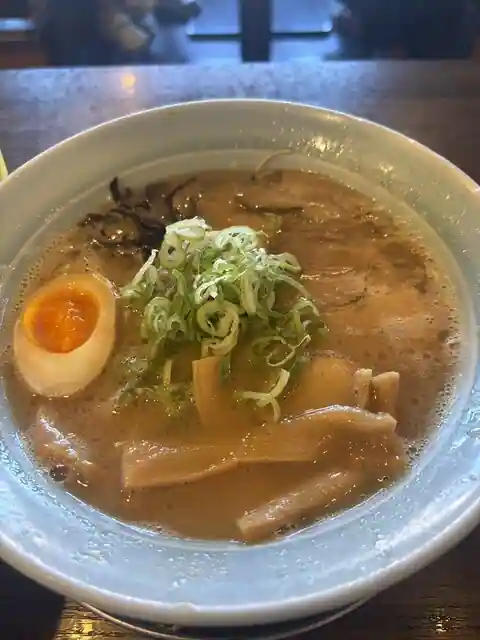
Hakata Tonkotsu Masaki Osu
なごみ康
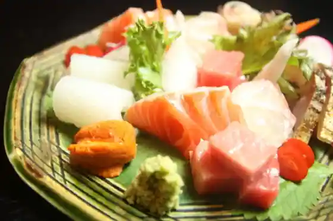
Nagomi Yasushi
グリーチネ
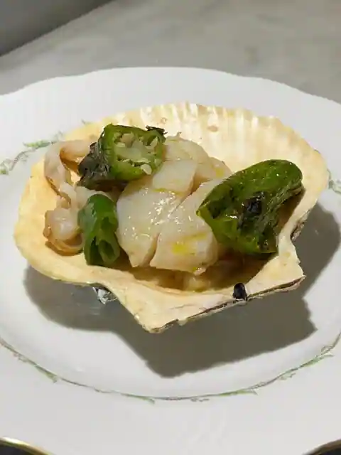
Gurichine
スパニッシュ バル プロモ
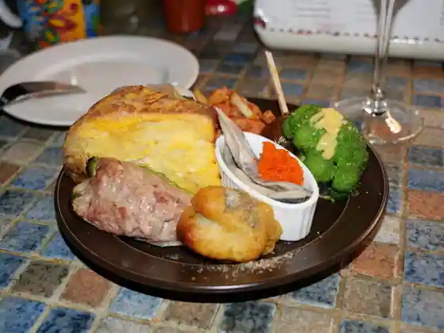
Supanisshu Baru Puromo
Kico
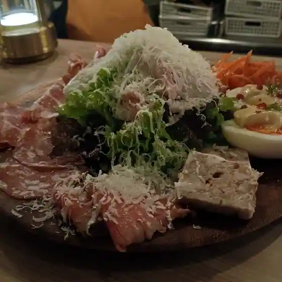
Kico
ビストロチャイナ 蜜柑
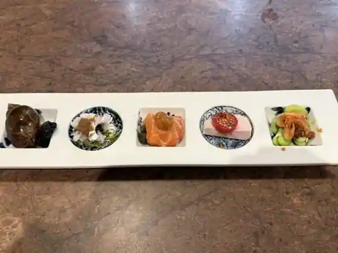
Bistro Chaina Mikan
酒菜くどう
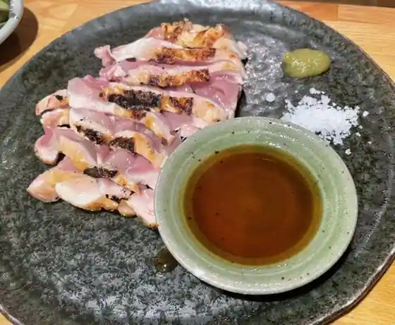
Shusai Kudo
肴や 純しん
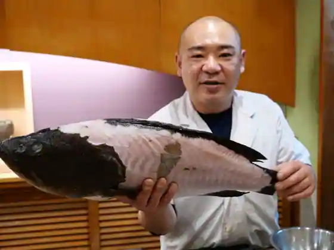
Sakana Ya Jun Shin
料理屋まつ瀬
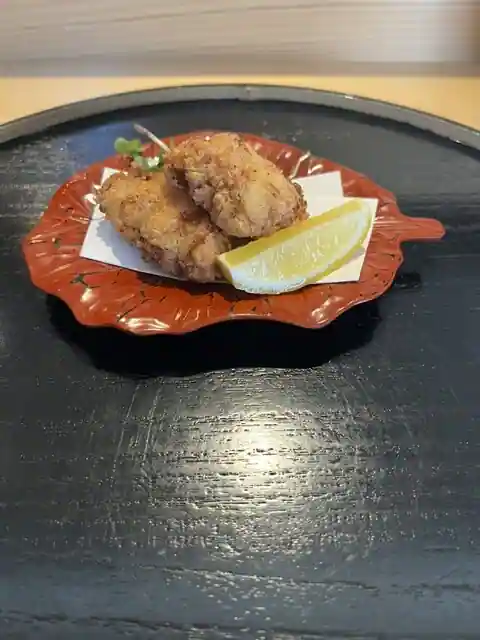
Ryoriya Matsu Se
じゅえるるーむ
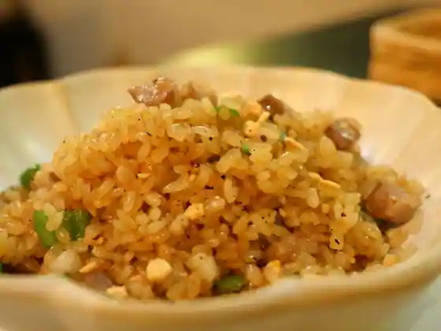
Juerurumu
あじわいや げん
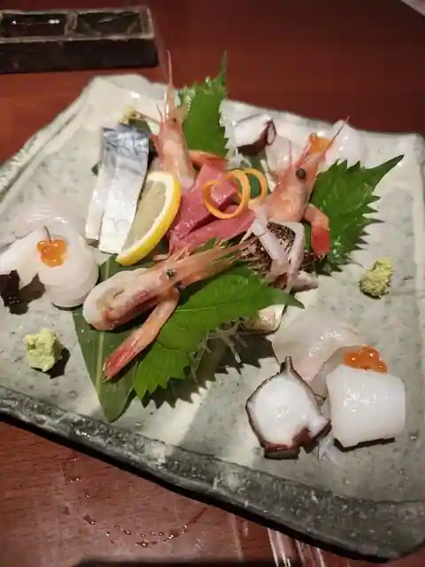
Ajiwaiya Gen
いち庵
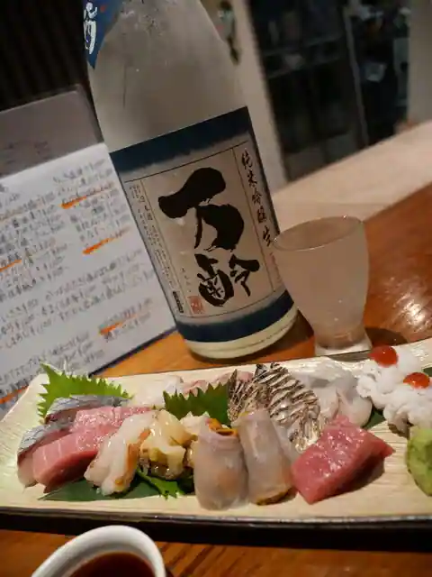
Ichi Iori
カウズクラウン
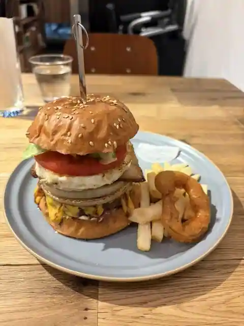
Kauzukuraun
朧
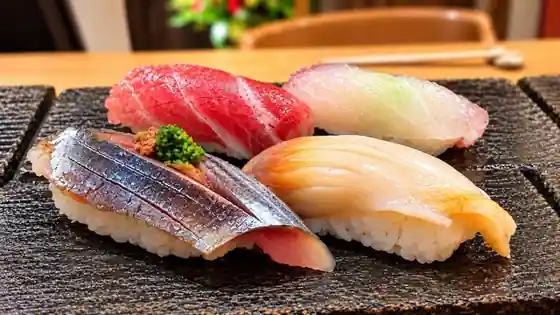
Ro
楽々亭
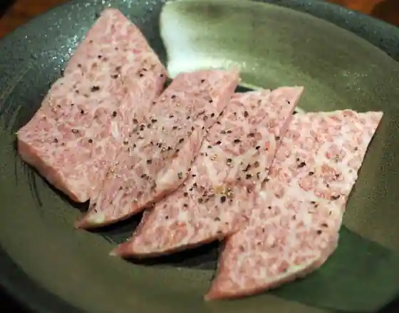
Rakuraku Tei
きばり屋 極
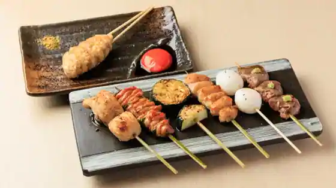
Kibari Ya Kyoku
馳走 とし藤
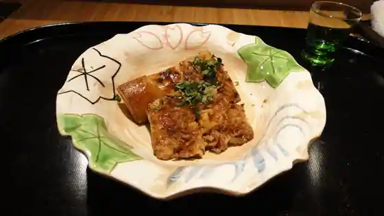
Chiso Toshi Fuji
創作 寿喜
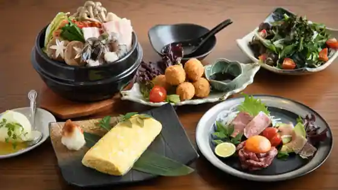
Sosaku Hisashi Ki
うばがもちや 本店
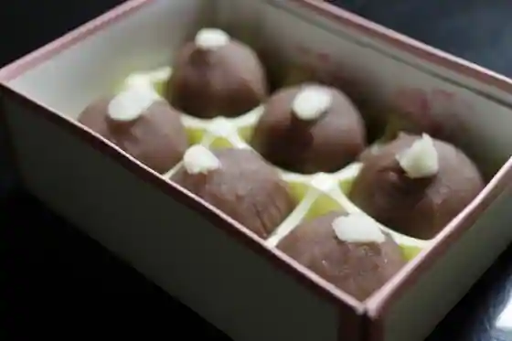
Ubagamochiya Hon
boulangerie montagne
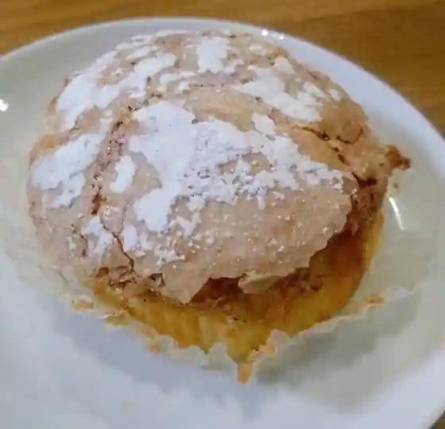
boulangerie montagne
夕鶴
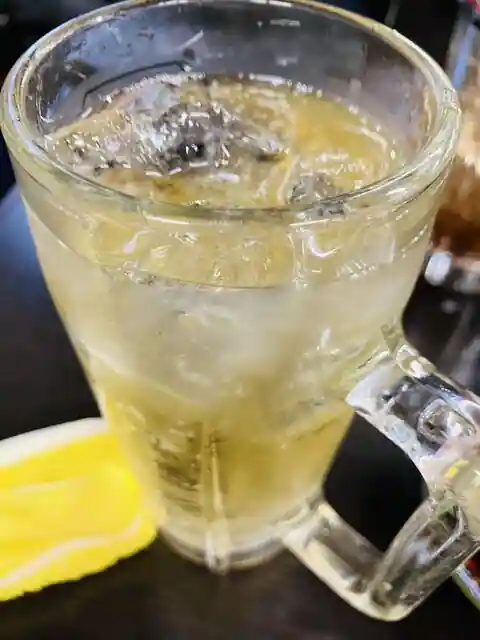
Yuzuru
クラブハリエ 草津近鉄店
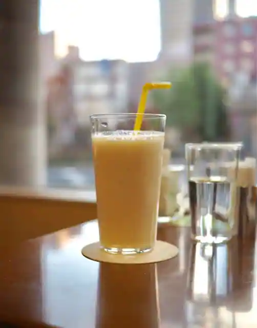
Kurabuharie Kusatsu Kintetsu
Sights
Kusatsu Yado Kaido Koryu Kan

Yahashi Minato Ato

Aoji Joshi

Toyotarentariisu Shiga Kusatsu Mise

Biwa Lakeside no Kusatsu no Yado
Karasuma Peninsula
Kiyomune Tsuka
Roadside Station Kusatsu
Kusatsu Amikahoru
Kusatsu Yado Honjin
Toyotarentariisu Shiga Kusatsu Eki Nishiguchi Mise
Kusatsu Kawato Chi Park de Ai Hiroba
Yujo Umekawa no Haka
Biwako Museum
Ota Shuzo Dokan Kura
Rokuha Park
Oiwake Dohyo
Yahashi Kihan Shima Park
Tsune Zen Tera
Bajiettorentaka Shiga
Muchi Saki Hachiman Shrine
Yagura Dohyo
Rokkubei Garden
Hasu Umi Tera (Shina Jizo)
Tachigi Shrine
Kyu Kusatsu Kawa no Sakura Namiki
TOYOTA SHARE Kusatsuesutopia Hotel Dai 1 Chushajo
Isasa Shrine
Kusatsu Shiteiariina
Kusatsu Ritsu Puru
Ashi Ura Kan'onji Ato
Shingu Shrine (Kusatsu)
Kusatsu Ritsu Sogo Gym
Oisugi Shrine
Sandai Shrine
JR Kusatsu Eki
Kusatsu Kogan
Kusatsu Ritsu Suisei Shokubutsu Koen Mizu Forest
ai Sai Hiroba
Kusatsu Yakusho